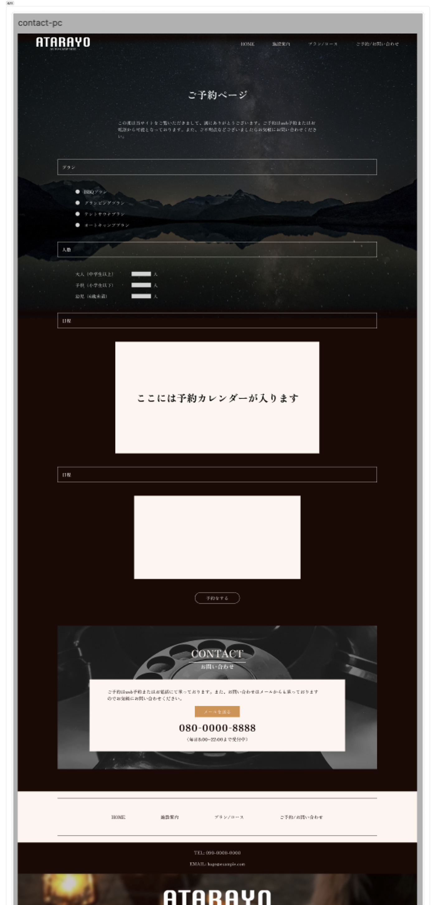

訓練校｜全3時間の集中授業

今回も内容ベースの区切り（タイムスタンプなし）。★★★＝特に重要。
| 区切り | 内容 | 重要度 |
|---|---|---|
| 1時間目 序盤 | 予約ページ作成スタート（プランページからコピペ） | ★★ |
| 1時間目 | カレンダー部分はフレーム1本で仮置き | ★★ |
| 1時間目 | 前日コンポーネント（アコーディオン）を流用＋ブール値で見出し非表示 | ★★★ |
| 1時間目 | ラジオボタンの作り方（楕円で簡易・サイズは16px推奨） | ★★★ |
| 1時間目 | プラン4種：手ぶら／フリー／グランピング／オートキャンプ | ★ |
| 2時間目 | 人数入力：アイコン+テキストの順番入れ替え | ★★ |
| 2時間目 | 大人/子供の入力欄＋単位（人）の余白 | ★★ |
| 2時間目 | 日程＝予約カレンダー枠（外部サービス前提で仮置き） | ★★★ |
| 2時間目 | お問い合わせ＝テキストエリア（高さ600px程度） | ★★ |
| 2時間目 | 「予約する」ボタン＝既存ボタンインスタンスを上書き | ★★ |
| 3時間目 | コンタクトバナー（電話・メール）背景画像＋黒オーバーレイ | ★★★ |
| 3時間目 | サブカラー（登録済みスタイル）の活用 | ★★ |
| 3時間目 | 背景画像のサイズ：内容の幅 × 0.8で固定 | ★★ |
| 3時間目 | フッターのインスタンス配置 → 全ページ完成 | ★★ |
| 3時間目 | プロトタイプで全ページ接続（リンクの繋ぎ込み） | ★★★ |
| 3時間目 終盤 | Figma授業の総括・終了挨拶 | ★★ |
プランページの背景・ヘッダー・コンポーネントはそのままコピペ。一から作り直さない。
アコーディオンの見出し部分をブール値Falseで非表示にして、別用途に流用。
ラジオボタン・テキストエリアはHTMLのinputそのまま使うことが多いので、Figma側は簡易でOK。
ラジオボタンのサイズは1文字分（16px）がおすすめ。実装時の自然な見た目に近い。
「アイコン→テキスト」を「テキスト→アイコン」に入れ替えるのはオートレイアウト内で順番を変えるだけ。
予約システムは外部サービス（Googleカレンダー埋め込み等）を使うことが多い。フレーム1本「カレンダーが入ります」で十分。
登録済みスタイルのサブカラーを予約ボタンに使うと、サイト全体の統一感が出る。
コンタクトバナーの背景画像は 内容部分の幅×0.8 で固定するとバランスが良い。
最後に全ページのリンクを接続。クリックで遷移できる動くカンプに仕上げる。
先生の所感：5〜10年はFigmaがデザインのベースツールであり続ける。慣れる価値あり。
予約ページの構造はプランページとほぼ同じ。背景の黒オーバーレイ・ヘッダー・タイトル枠は全部プランページからコピーして使い回す。
予約ページの「プラン」「人数」「日程」「お問い合わせ」の見出し枠は、アコーディオンコンポーネントを流用。ただし、アコーディオン特有のプラス/マイナスアイコンは不要なので、ブール値をFalseにして非表示にする。
プラン選択のラジオボタンを作る。先生のスタンスは「こだわらない」。
<input type="radio"> のHTML標準UIをそのまま使うことが多い。Figmaで凝ったデザインを作っても、ブラウザでは反映されないことが多いので、シンプルに作れば十分。
人数入力欄では「テキスト → 入力枠」の順。ラジオは「楕円 → テキスト」だったので、流用するには順番を入れ替える必要がある。
<input type="number">相当）予約ページの目玉「日程選択」のカレンダー。実装は外部サービスを使うことが多いので、Figmaで凝って作る必要はない。
「ここには予約カレンダーが入ります」 と書いたフレーム1本で十分。
テキストエリアは適当なサイズ感（横600px・高さ200px程度）のフレームを1本。これも実装時はHTMLの <textarea> をそのまま使うので、こだわり不要。
全ページが揃ったので、最後にプロトタイプで全リンクを接続する。6/10で学んだリンク接続の手順を、各ページ＋フッターメニューに対して実行。
scroll-margin-top や scroll-padding-top で対処する案件。Figma段階では完全には解決しない。
5/29から始まったFigma授業はここで一旦区切り。先生からの締めくくりメッセージ。
これでFigmaの紹介は以上になります。授業の最初にも言ったように、これは初級編というか入り口になります。── A先生
| 用語 | 意味 |
|---|---|
| ブール値で流用 | 表示/非表示の切替で、同じコンポーネントを別用途に使い回す |
| ラジオボタン | 選択肢から1つだけ選ぶUI。HTML標準UIをそのまま使うことが多い |
| テキストエリア | 複数行のテキスト入力。HTMLの<textarea> |
| カレンダー埋め込み | 外部サービス（Googleカレンダー等）でカレンダー機能を実装 |
| 仮枠 | 実装時に置き換える前提のダミー要素 |
| サブカラー | メインカラーに次ぐ補助色。ボタン等のアクセントに使う |
| コンタクトバナー | 連絡先案内のバナー領域（背景画像＋テキスト＋CTA） |
| フローの開始地点 | プロトタイプ再生時の最初に表示するフレーム |
| スムーズスクロール&リセット | ページ遷移時の動き設定。先頭から表示し直す |
| プラグイン（Figma） | Figmaの拡張機能。画像一括処理・アイコン挿入等 |
| コミュニティ（Figma） | クリエイターが作品・テンプレートを共有する場 |
ラジオボタンとかにこだわったデザインを入れる必要はないかなと。実際にはinputタイプradioのそのまんまのUIを使うことがほとんどです。── フォームUIの現実
予約システムを自作するのは結構難しい。だいたいGoogleカレンダー埋め込みみたいな感じで表示されることが多いので、この辺はとりあえずカレンダーっぽいものを入れて仮置きで。── 外部サービス活用の前提
これでFigmaの紹介は以上になります。これは初級編というか入り口です。プラグインもいっぱいあるし、コミュニティにはいろんなクリエイターの作品が落ちてたりとか、引き続き色々と触ってみてください。── 締めくくり
向こう10年ぐらいはFigmaが波動を得るんじゃないかなと思います。5年短く見積もっても、5年ぐらいはずっとデザインのベースのツールになる。── Figmaという選択への確信